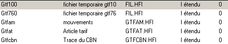
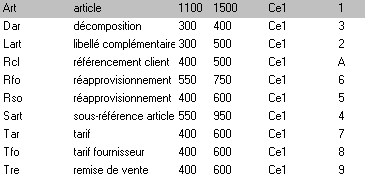
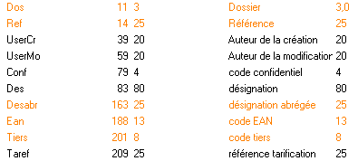

Fichier
Un fichier est un objet contenant une ou plusieurs tables.
Physiquement, à un fichier du dictionnaire correspond un fichier séquentiel-indexé.
Voici un exemple de liste de fichiers :

Table
Une table est un élément d'un fichier. Elle correspond à un type d'enregistrement dans le fichier physique.
Physiquement, il est possible de stocker plusieurs types d'enregistrements différents dans un même fichier.
Pour plus de détails, voir la rubrique "Gestion de fichiers" du livre de la documentation Xwin - Programmation consacré au langage Diva.
Par exemple, le fichier Gtfat contient les tables :

Champ
Un champ est tout simplement un élément d'une table. Il peut être décomposé en sous-champs.
Par exemple, voici un extrait de la liste des champs de la table Art (les champs en rouge font partie d’un index)
.
